第 8.1 節
物體拋出後，水平和垂直方向各做甚麼運動？
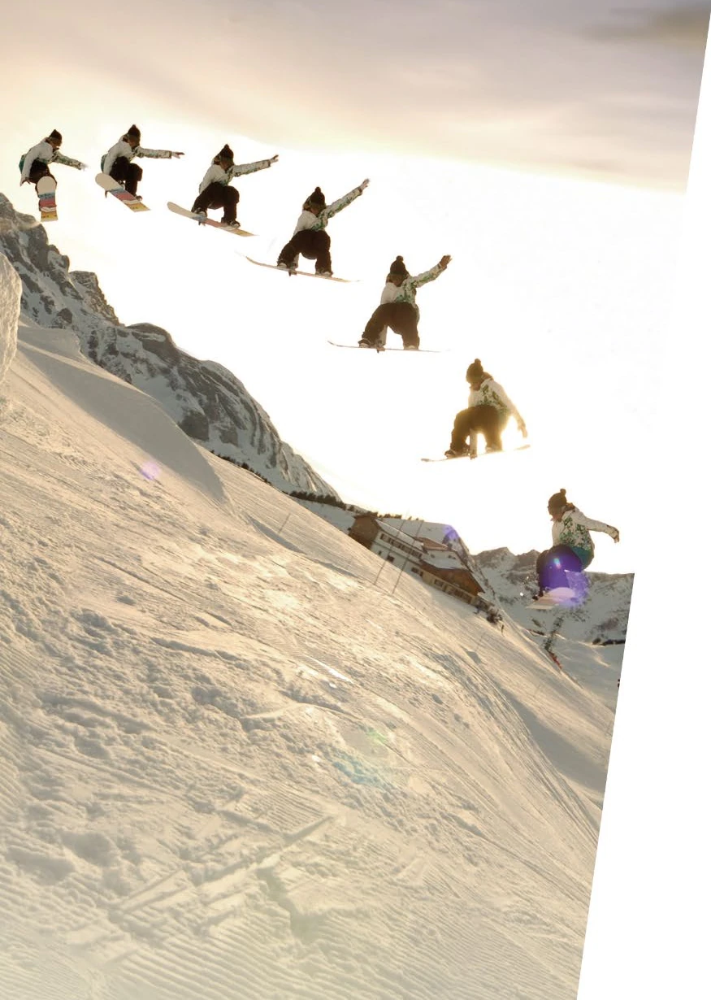
拋體運動簡介
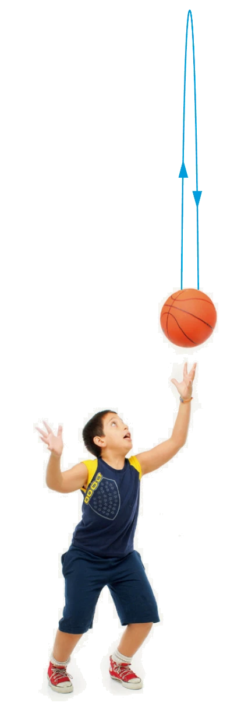
由籃球離手起，至它再次碰到其他物體前，觀察它的運動。
假設空氣阻力可略去不計。
籃球在空中只受重力作用。
物體射出後只受重力作用的運動，稱為拋體運動。
工作紙 p.2 · A1
物體稱為拋體，經過的路徑稱為軌跡。有水平速度分量時，軌跡呈拋物線；垂直上拋的軌跡是直線。
以牛頓運動定律解釋拋體運動
比較上升、最高點和下降時的重力。
根據牛頓第二定律，加速度 g 的大小不變，方向向下。
工作紙 p.2 · B1
| 方向 | 淨力 | 運動 |
|---|---|---|
| 垂直方向 | mg 向下 | 勻加速運動加速度 g 向下 · 牛頓第二定律 |
| 水平方向 | 0 | 勻速運動水平速率保持不變 · 牛頓第一定律 |
拋體的水平運動和垂直運動各自獨立。
實驗 8a · 工作紙 p.3
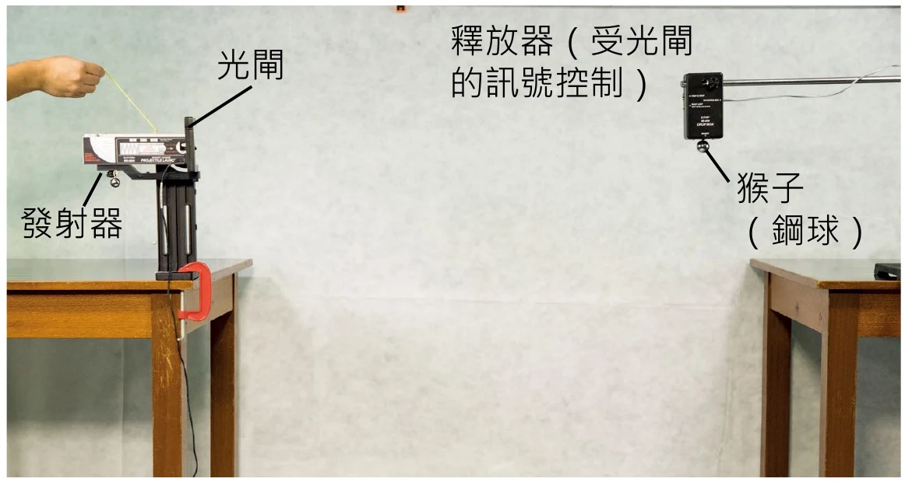
兩球起點同高。
兩球的垂直初速度都是 0。
實驗 8a · 互動模擬
研究拋體的垂直運動
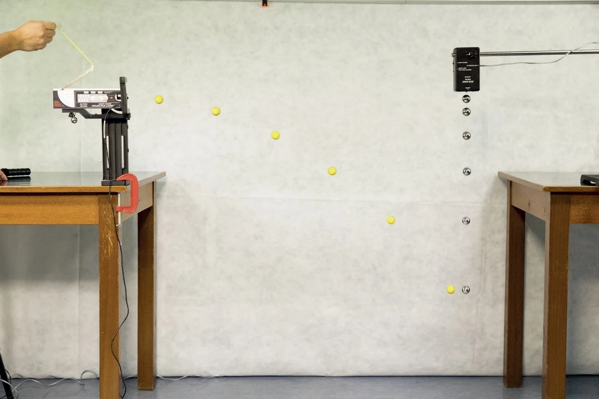
頻閃照片記下物體每隔相同時距的位置。
左右各找一個同時刻的位置。兩球當時是否同高？
在同一時刻，兩球下降了相同的垂直距離。
運動模型 · 工作紙 p.4 C1
每格相隔 0.10 s。比較較近和較遠的兩次。
兩球垂直初速度同為 0，垂直加速度同為 g 向下。每個時刻的下落量一樣。
在這兩組設定中，較遠的一組較遲在空中相遇。
工作紙 p.4 · C2
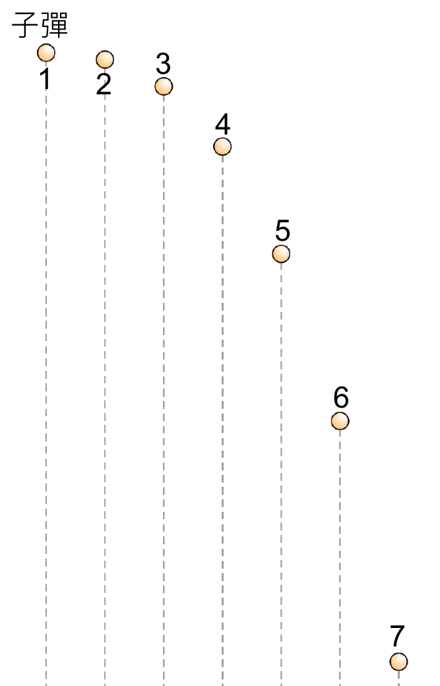
比較第 1 至 2 點和第 2 至 3 點的水平距離。
每段時距內經過的水平距離相同，所以水平速率保持不變。
工作紙 p.5 · C3
在兩條參考線上，找出同一時刻的水平位置和垂直位置。
兩條投影線的交點就是拋體在該時刻的位置。
工作紙 p.5 · C4
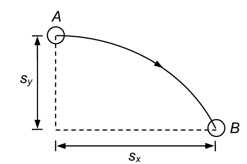
小球在同一段時間 t 內向右移，也向下移。
例題 1 · 原投影片 p.19–22
P 由 X 點從靜止下落，Q 同時由 X 點水平拋出。
標出 Q 在 0.1 s 和 0.3 s 的位置。
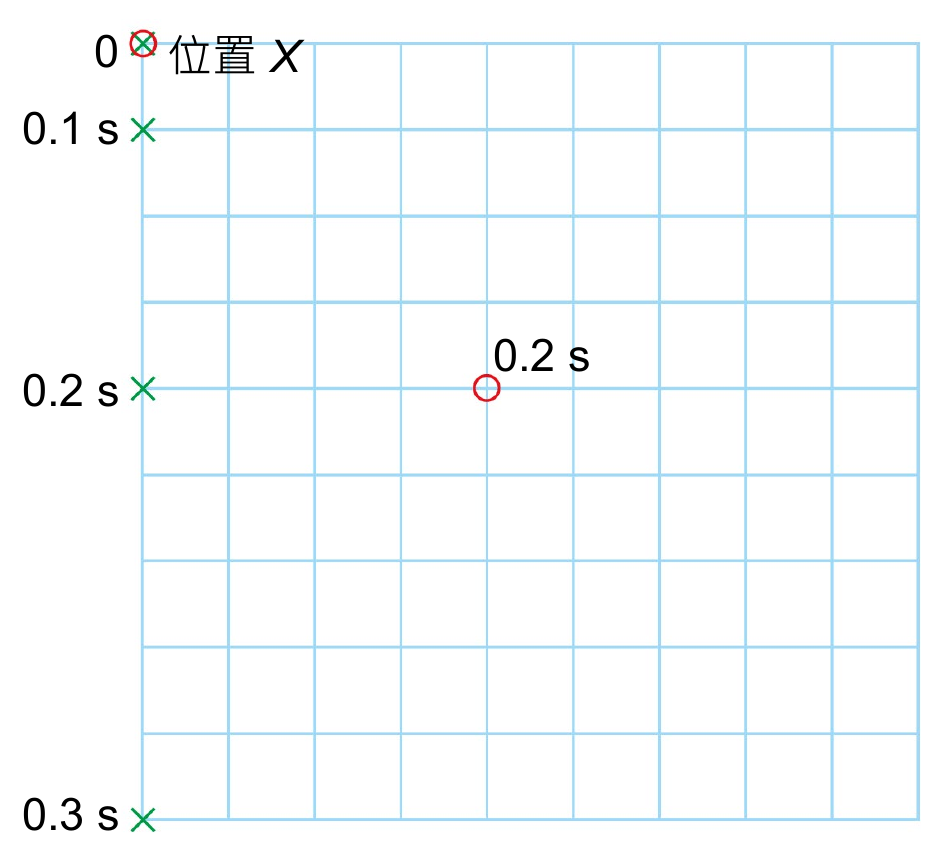
0.1 s 0.3 s工作紙 p.5 · 鞏固 1
X 從靜止下落，Y 同時從相同高度水平拋出。
速率不同。兩球垂直速率相同，Y 還有水平速度分量。
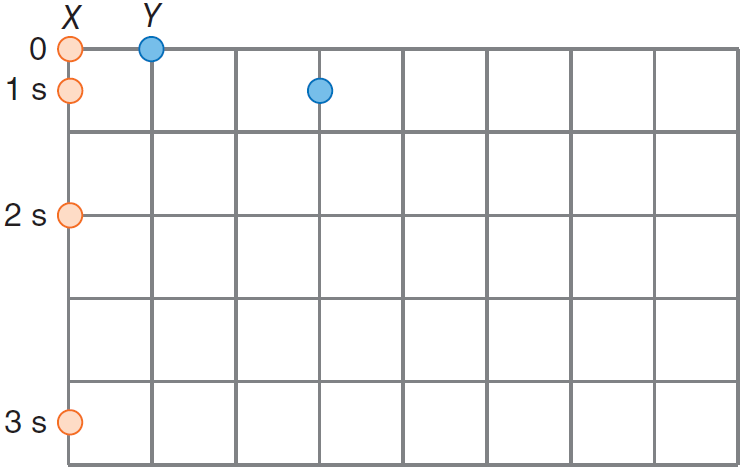
2 s 3 s快測 1 · 第 1 題
石頭 A 從懸崖水平擲出。石頭 B 同時由相同高度從靜止下落。空氣阻力可略去不計。
兩塊石頭的垂直初速度都是 0，並以同一個向下加速度下落，因此同時到達水面。
快測 1 · 第 2 題
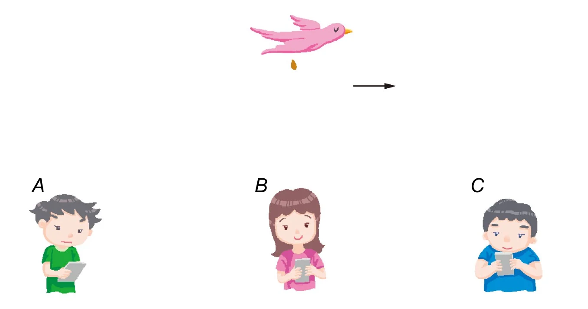
小鳥以恆速度向右飛，在 B 的正上方放下種子。
按圖示情況，A、B、C 誰最可能被擊中？
C。種子離開小鳥時，已有向右的水平速度。
8.1 小結
空氣阻力可略去不計時，淨力是向下的重力。
水平勻速，垂直勻加速。
合起該時刻的水平位置和高度，就得到拋體的位置。
手機小實驗 · 原投影片 p.23–26
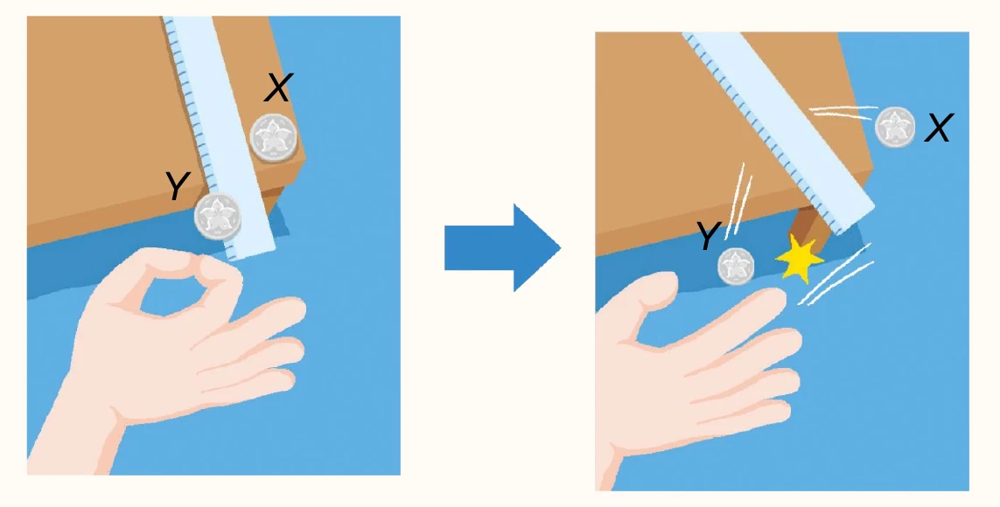
手機小實驗 · 原投影片 p.27–30
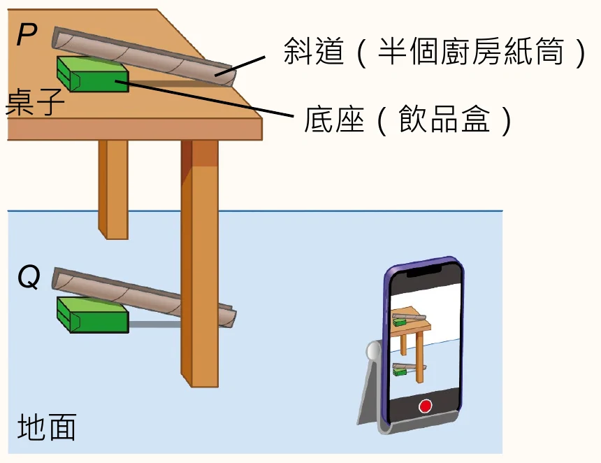